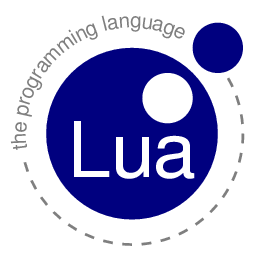

Lua
Michał Zochniak, KOTIK

Michał Zochniak, KOTIK
function func()
a = "Hello world"
print(a)
-- komentarz
--[[
print("inny komentarz (ugh...)")
--]]
a = 2 print(a+2)
end
func()
http://emscripten.org
a = {2,3,4}
print("a[1] = " .. a[1])
a = {a = 2}
print("a.a = " .. a.a)
The userdata type allows arbitrary C data to be stored in Lua variables. It has no predefined operations in Lua, except assignment and equality test. Userdata are used to represent new types created by an application program or a library written in C; for instance, the standard I/O library uses them to represent files. We will discuss more about userdata later, when we get to the C API.
a = {2,"3",4}
for i,v in ipairs(a) do
print(i .. " " .. v)
end
a = {
[function(x) return 2*x end] = 3,
[function(x) return x*x end] = 4,
[function(x) return 0 end] = 4
}
for i,v in pairs(a) do
print(i(v))
end
function range(from,to)
return function()
return nil
end
end
for i in range(2,5) do
print(i)
end
a = {2,"3",4}
function kotikpairs(tab)
local i = 0
return function()
i = i + 1
if(tab[i] == nil) then
return nil
end
return i, tab[i]
end
end
for i,v in kotikpairs(a) do
print(i .. " " .. v)
end
local function iter(to, i)
if(i >= to) then
return nil
end
return i+1
end
function stateless_range(from, to)
return iter, to, from-1
end
for i in stateless_range(2,5) do
print(i)
end
local function iter(a, i)
i = i + 1
local v = a[i]
if(v) then
return i, v
end
end
function kotik_ipairs(tab)
return iter, tab, 0
end
for _,v in kotik_ipairs({"a", "b", "c"}) do
print(v)
end
function kotik_pairs (t)
return next, t, nil
end
for _,v in kotik_pairs({a=1, b=2, "c"}) do
print(v)
end
t = {}
print(getmetatable(t))
Pair = {}
function Pair.new(first, second)
local pair = {first = first, second = second}
setmetatable(pair, Pair.mt)
return pair
end
Pair.mt = {}
function Pair.mt.__add(a,b)
return Pair.new(a.first + b.first, a.second + b.second)
end
local a = Pair.new(1,1)
local b = Pair.new(5,3)
local c = a + b
print(c.first .. " " .. c.second)
setmetatable(a, {__index = b})
Class = {
a = 1
}
function Class:new(o)
o = o or {}
setmetatable(o, self)
self.__index = self
return o
end
function Class:test()
print(self.a)
end
local a = Class:new()
a:test()
BetterClass = Class:new() function BetterClass:test2() print(self.a * 2) end GreatClass = BetterClass:new() function GreatClass:new(o) o = BetterClass.new(GreatClass,o) o.a = 10 return o end function GreatClass:test3() print(self.a * 3) end local o = BetterClass:new() o:test() o:test2()